#Java流程控制
- 用户交互Scanner
- 顺序结构
- 选择结构
- 循环结构
- break&continue
- 练习
1、用户交互Scanner
-
通过Scanner类来获取用户的输入
-
基础语法：
Scanner s = new Scanner(System.in); -
通过Scanner类的next()方法获取输入的字符串，需要使用hasNext()判断是否还有输入的数据
package com.heng.scanner;
import java.util.Scanner;
public class demo01 {
public static void main(String[] args) {
//创建一个扫描器对象，用于接收用户输入的数据
Scanner scanner = new Scanner(System.in);
System.out.println("用next方式接收：");
//判断用户有没有输入字符串
if(scanner.hasNext()){
//使用next的方式来接收
String str = scanner.next();
System.out.println("输出的内容为："+str);
}
//凡是属于IO流的类如果不关闭就会一直浪费资源。所以要用完就关闭
scanner.close();
}
}
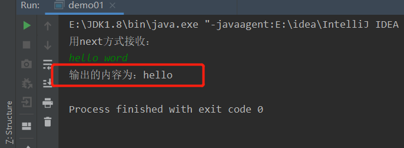因为使用next方法接收，所以空格后面的字符不能被str接收，因此可以使用nextLine()方法操作
- 通过nextLine()方法获取输入的字符串，需要使用hasNextLine()判断是否还有输入的数据
package com.heng.scanner;
import java.util.Scanner;
public class demo02 {
public static void main(String[] args) {
Scanner scanner = new Scanner(System.in);
System.out.println("用nextLine方式接收：");
//判断是否还有输入
if(scanner.hasNextLine()){
//通过nextLine()方法来接收
String str = scanner.nextLine();
System.out.println("输出的内容为："+str);
}
scanner.close();
}
}
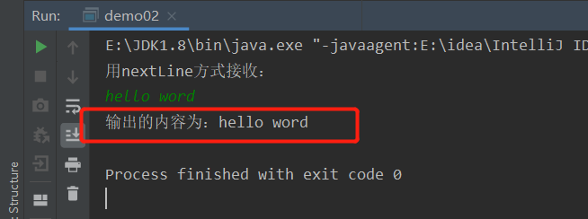
- next()方法与nextLine()方法都能用来接收输入的内容，大多数情况使用后者
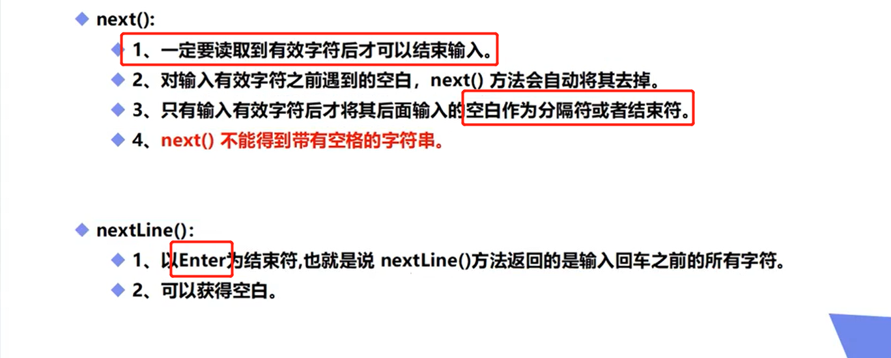
-
scanner的进阶用法
-
scanner类中有许多个方法来接收不同的数据
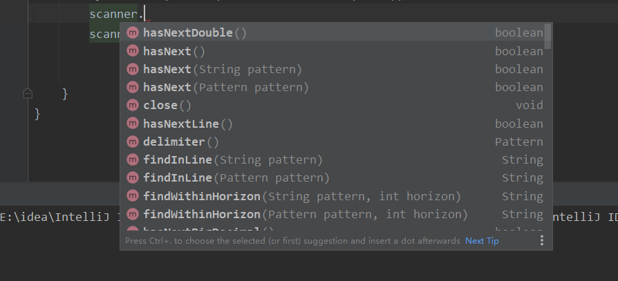
例：利用scanner类中方法来接收数字并求出其和以及平均值
package com.heng.scanner; import java.util.Scanner; public class demo03 { public static void main(String[] args) { //输入多个数字，求出其总和以及平均数，每输入一个数字用回车确认，通过输入非数字来结算循环 Scanner scanner = new Scanner(System.in); //用于计算总和 double sum = 0; //用于统计输入的数据个数. int m = 0; System.out.println("请输入数据:"); //用while循环来判断是否还有输入，并且在里面累加求和 while (scanner.hasNextDouble()){ double x = scanner.nextDouble(); m=m+1; sum = sum + x; System.out.println("你输入了第"+m+"个数，当前总和sum="+sum); } System.out.println(m+"个数的和为:"+sum); System.out.println(m+"个数的平均值为:"+(sum/m)); scanner.close(); } }
-
2、顺序结构
- Java的基本结构就是顺序结构，除非特别指明，否则就按照顺序一句一句执行
- 顺序结构是最基本的算法结构
- 顺序结构是任何一个算法都离不开的一个结构
3、选择结构
3.1 if单选择结构
graph TB
A[开始]-->B{"布尔表达式"}
B-->|true|C[语句]
B-->|false|结束
-
语法结构
package com.heng.struct; import java.util.Scanner; public class Demo01 { public static void main(String[] args) { Scanner scanner = new Scanner(System.in); System.out.println("请输入内容："); String s = scanner.nextLine(); //equals:判断字符串是否相等 if(s.equals("Hello")){ System.out.println(s); } System.out.println("END"); } }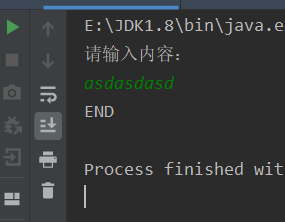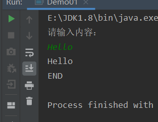
3.2 if双选择结构
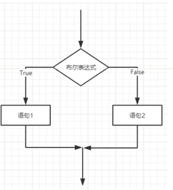
if(布尔表达式){
//如果布尔表达式为true
}else{
//如果布尔表达式为false
}
###3.3 if多选择结构
if(布尔表达式1){
//如果布尔表达式1的值为true 执行
}else if(布尔表达式2){
//如果布尔表达式2的值为true 执行
}else if(布尔表达式3){
//如果布尔表达式3的值为true 执行
}else {
//如果以上布尔表达式都不为true 执行
}
- else语句必须在所有的else if语句后面
- if嵌套结构
if(布尔表达式1){
if(布尔表达式2){
//执行
}
}
3.4 switch选择结构
switch(expression){
case value:
//语句
break;
case value:
//语句
break;
//可以有任意数量个case语句
default ://可选 一般在最后
//语句
}
-
switch语句中变量可以使 byte、short、int、char在jdk7之后还支持String类型
-
但字符的本质还是数字
package com.heng.struct;
public class SwitchDemo01 {
public static void main(String[] args) {
String name = "志恒";
switch (name){
case "小胖" :
System.out.println("小胖");
break;
case "志恒" :
System.out.println("志恒");
break;
case "松涛" :
System.out.println("松涛");
break;
default:
System.out.println("查无此人");
}
}
}
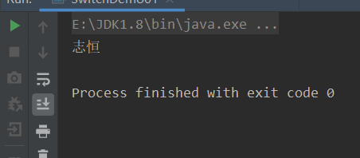
- 反编译 Java——>class文件——>反编译（IDEA实现）
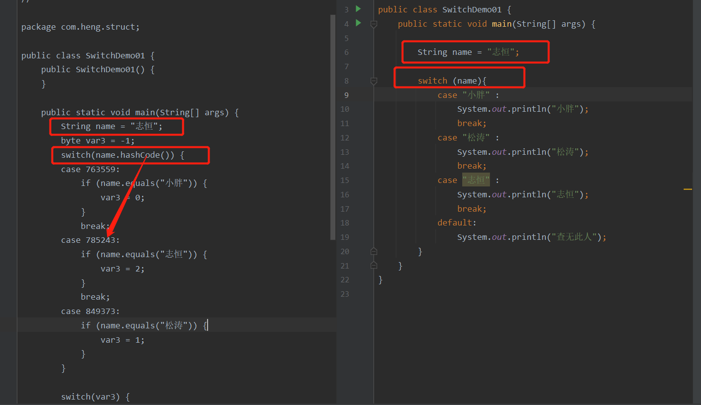
- 需要注意的是case具有穿透性 如果不加break或继续执行后面的case
package com.heng.struct;
public class SwitchDemo02 {
public static void main(String[] args) {
char grade = 'B';
switch (grade){
case 'A':
System.out.println("优秀");
break;
case 'B':
System.out.println("良好");
case 'C':
System.out.println("及格");
case 'D':
System.out.println("不及格");
break;
default:
System.out.println("未知等级");
}
}
}
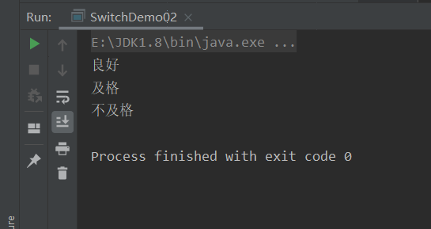
4、循环结构
###4.1 while循环
- 只要布尔表达式结果为true就会一直执行
- 用一个表达式失效的方式来结束循环
while(布尔表达式){
//语句
}
###4.2 do…while循环
- 布尔表达式的值为false do…while循环也会执行一次
- do…while循环至少会执行一次
do{
//语句
}while(布尔表达式);
- while与do…while的区别
- while先判断后执行；do…while先执行后判断
- do…while总是保证循环体至少执行一次。
package com.heng.struct;
public class WhileDemo01 {
public static void main(String[] args) {
int a= 0;
while(a<0){
System.out.println(a);
a++;
}
System.out.println("====================");
do {
System.out.println(a);
a++;
}while (a<0);
}
}
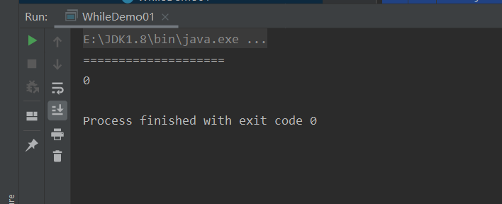
4.3 For循环
-
语法结构
for(初始化;布尔表达式;更新){ //代码语句 } -
for循环数支持迭代的一种通用结构，是最有效的、最灵活的循环结构
-
用for循环打印九九乘法表
package com.heng.struct;
public class ForDemo04 {
public static void main(String[] args) {
int sum = 0;
for (int i = 1; i <= 9; i++) {
for (int j = 1; j <= i; j++) {
sum = i*j;
System.out.print(j+"*"+i+"="+sum+"\t");
}
System.out.println();
}
}
}
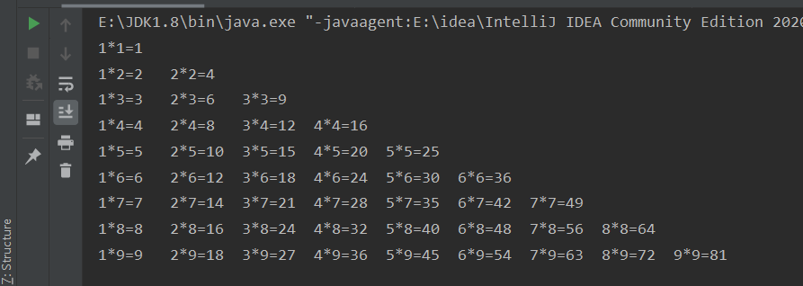
- 增强For循环
package com.heng.struct;
public class ForDemo05 {
public static void main(String[] args) {
int [] number= {10,20,30,40,50};
//首先看基本的for循环遍历数组
for(int i=0;i<number.length;i++){
System.out.println(number[i]);
}
System.out.println("===================");
//下面是增强型for循环遍历
for(int x:number){
System.out.println(x);
}
}
}
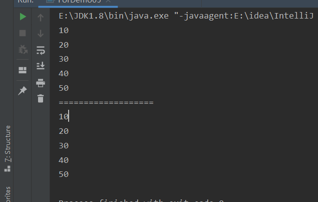
5、break与continue
5.1 break
-
在任何循环语句的主体部分，均可用break控制循环的流程。break用于强行退出循环不执行循环体的剩余语句
-
switch中的break可以避免case的穿透性
5.2 continue
-
continue语句用在循环语句体中，用于终止某次循环过程，即跳过循环体中尚未执行的语句，接着进行下一次是否执行循环的判定
-
java中可以使用标签（goto）
package com.heng.struct;
public class LabelDemo {
public static void main(String[] args) {
//求101-150之间的质数
int count = 0;
//outer为标签
outer:for (int i = 0; i < 101; i++) {
for(int j = 2;j<(i/2);j++){
if(i %j==0){
continue outer;//continue直接跳出到最外面的循环
}
}
System.out.print(i+" ");
}
}
}
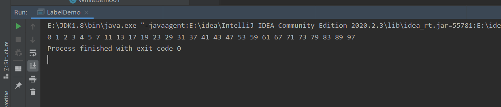
6、练习
- 打印一个五行的三角形
package com.heng.struct;
public class TestDemo01 {
public static void main(String[] args) {
//打印三角形
/*
* 所打印的三角形就是用空格+“*”组成
* 所以一开始进入循环1 打印倒三角的空格
* 然后进入循环二，打印三角形的一半
* 最后进入循环三，将三角形补全
* */
for (int i = 1; i <= 5; i++) {
for(int j=5;j>=i;j--){
System.out.print(" ");//循环1 打印倒三角的空格
}
for (int j = 1; j <=i ; j++) {
System.out.print("*");//循环2 打印了三角形的左半部分
}
for (int j = 1; j <i ; j++) {
System.out.print("*");//循环3 将三角形补全
}
System.out.println();
}
}
}
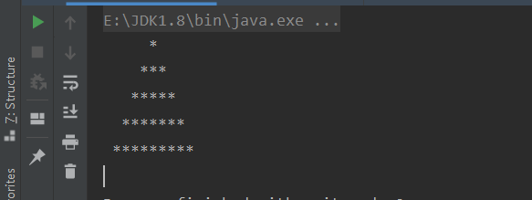